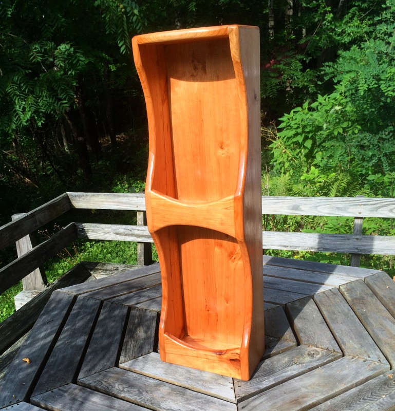
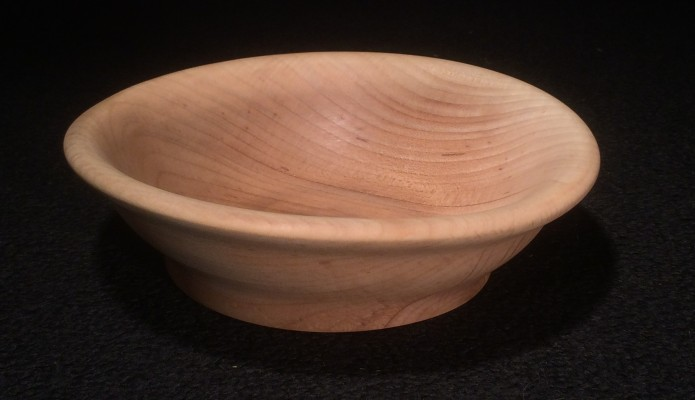
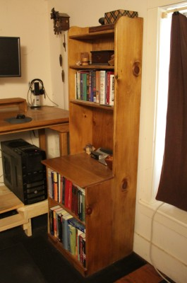
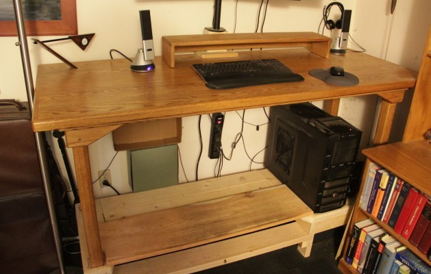

I designed this wine rack for my parents. It holds four bottles of wine (two on top, two on bottom). I got the wood from a dead cherry tree that I cut down right behind my house. My dad helped me mill the tree into boards and then plane it. I tried to be more creative with this project, adding curved cuts thoughout. January-July 2015.
I recently cut down a maple tree for firewood, and decided to make a bowl out of the base of the tree. This is one of the largest bowls that I've tried to make, and also perhaps the thinnest. Click on the photo for details. July 2015.
I designed this bookshelf to be an extension to my desk. Most of the shelf is made of pine, but the writing surface that sticks out is made of three joined oak boards. January 2014.
I built this table over winter break in my junior year of undergrad, to use as a desk in my off-campus house at Tufts. The top surface is made of seven boards joined on the edges, with a border around that. The legs are removable. I recently converted the table into a standing desk, as shown in the photo below. January 2010.
